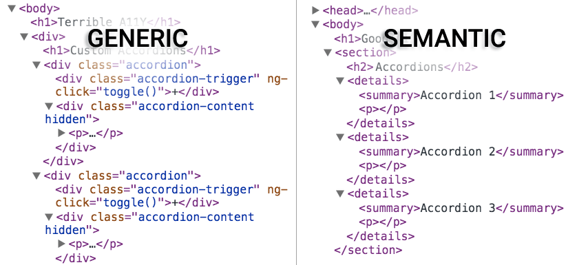

Hi, SmashingConf Whistler!
What if you couldn't:
- do ski ballet
- use a mouse
- see the screen
- perceive colors
- hear audio content
?
Web Accessibility
Everyone can perceive, understand, navigate, and interact with the Web, and they can contribute to the Web.
Accessibility is about people.


A Web for Everybody
Marcy Sutton, Developer @Substantial
Angular.js Accessibility & Material Design
Today!
- Assumptions
- Accessible UIs
- Web Components
- Resources
Assumptions about Users
- Disabled people cook.
- Disabled people travel.
- Disabled people work out.
- Disabled people drink whiskey.
- Disabled people take pictures.
“The tree is done! Pic courtesy of BlindChick photography…bad focus is strictly the blind girl’s fault.” Sarah Outwater on Facebook

Disabled people are
early adopters.
Tech Lifelines
- Social networks
- Text-to-speech
- Speech recognition
- Braille/tactile devices
- Live captioning
- Image recognition
- Accessible maps
Include accessibility
from the start.
On inaccessible user interfaces:

"Interactive" means something.
cursor: pointer;element.on('click')outline: none;
Enable the keyboard!
<core-item style="cursor:pointer;">Inbox</core-item> // NOPE.
<button ng-click="clickHandler()">Inbox</button> // YEP!
<md-button role="button" tabIndex="0"
ng-click="heckYeah()" ng-keypress="heckYeah()">
Inbox
</md-button>
"Semantic" means something.
Adding semantics
to components
ARIA Core Components
Roles
What does this thing do?
<div role="img" style="background-image..."
States
The current condition of this particular thing
<md-input aria-disabled="true"...
Properties
<md-checkbox aria-label="Subscribe"...
Use the simplest abstraction possible.
Don't overdo it.
People Will Travel
Sass
.navlist--main > li > a
color: $white
display: block
&:hover
text-decoration: underline
Sass (corrected)
.navlist--main > li > a
color: $white
display: block
&:hover, &:focus
text-decoration: underline
Let’s Try This Again
Accessible Scroll UI Demo
Handling Focus
$scope.$watch('airportIsSelected', function(newValue){
if(newValue){
$('html,body').animate({
scrollTop: peoplePicker.offset().top
}, 600);
peoplePicker.find('button').first().focus();
$rootScope.$broadcast('statusUpdated', self.selectedAirport);
}
});
Alerting the User
<status-bar aria-live="polite"></status-bar>
function statusBarDirective($scope, $element, $attrs) {
element.attr({
'role' : 'region'
});
$scope.$on('statusUpdated', function(scope, message) {
$element.html(message.text);
});
}
Whiskey Business
Focus Management
class App.FocusManager
constructor: ->
$('body').on 'focusin', (e) =>
@oldFocus = $(e.target)
App.bind 'rendered', (e) =>
return unless @oldFocus
@_focusById() if @oldFocus.data('focus-id')
_focusById: ->
focusId = @oldFocus.data('focus-id')
newFocus = document.querySelector("##{focusId}")
MyApp.focus(newFocus) if newFocus
Responsive Images
<div role="img" style="background: url(corner-creek.gif)"
aria-label="Corner Creek Kentucky Bourbon"></div>
[role=img] {
background-size: cover;
background-position: center right;
height: 100%;
width: 100%;
}

The Future is Here
Taco buttons for all
Typical Web Component

The Accessibility Tree

Web Components
- Reusable widgets of your dreams
- Custom elements
- Encapsulation
- Reinventing the Web
- <div> soup
- Dependency hell
- BRB jumping out window
Is your element accessible?
- Can you use your element with the keyboard only?
- Can you use your element with a screen reader?
- Can your element work without sound?
- Can it work without color?
- Can your element work with high-contrast mode enabled?
Revisiting the Basic List Box
Testing Tools
- Your Keyboard
- VoiceOver (iOS, OSX)
- TalkBack (Android)
- JAWS, WindowEyes, NVDA
- Virtual Box
- Modern.ie Windows VMs
- Chrome Accessibility Dev Tools